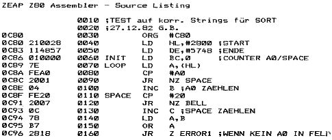

80-Bus Journal |
Januar 1983 · Ausgabe 1 |
Beim Test des Sort traten Schwierigkeiten auf, die von Christian Peter schon vorhergesehen wurden: in einigen Records meiner Datei waren die Feldbestimmungen nicht genau eingehalten worden. So war einmal vor einen Nachnamen nur ein Anfangsbuchstabe angehängt, im Namensfeld stand nur ein Name (z.B. eine Firma) oder das A0 (Graph+Space) war versehentlich als einfacher Space eingegeben. Besonders letzteres trat mehrmals auf, worauf ich wohl die Vereinbarungen zur Feldtrennung (NJ 3/4-82 Dateiverwaltung) nochmals überdenken und vereinfachen werde. Grundsätzlich scheint es aber sowieso sinnvoll, die Records auf richtigen Aufbau zu untersuchen, bevor die Datei durch den SORT zerstört wird. Das folgende Miniprogramm (auf die Konventionen von DATEI eingestellt) könnte auch direkt in den Sort als Sicherung eingebaut werden. Dann müßte man aber noch weitere Fehlermöglichkeiten einplanen. In der abgedruckten Form stellt es nur fest, wenn ein Feld kein Posmark enthält oder wenn nicht genügend Felder vorhanden sind.
Das zweite Listing zeigt eine Möglichkeit, den Sort durch ein Menue aufzurufen, so daß man nicht per Modify die gewünschten Suchkriterien mühsam eingeben muß. Der Sort kann so direkt für DATEI verwendet werden.

| Seite 19 von 28 |
|---|